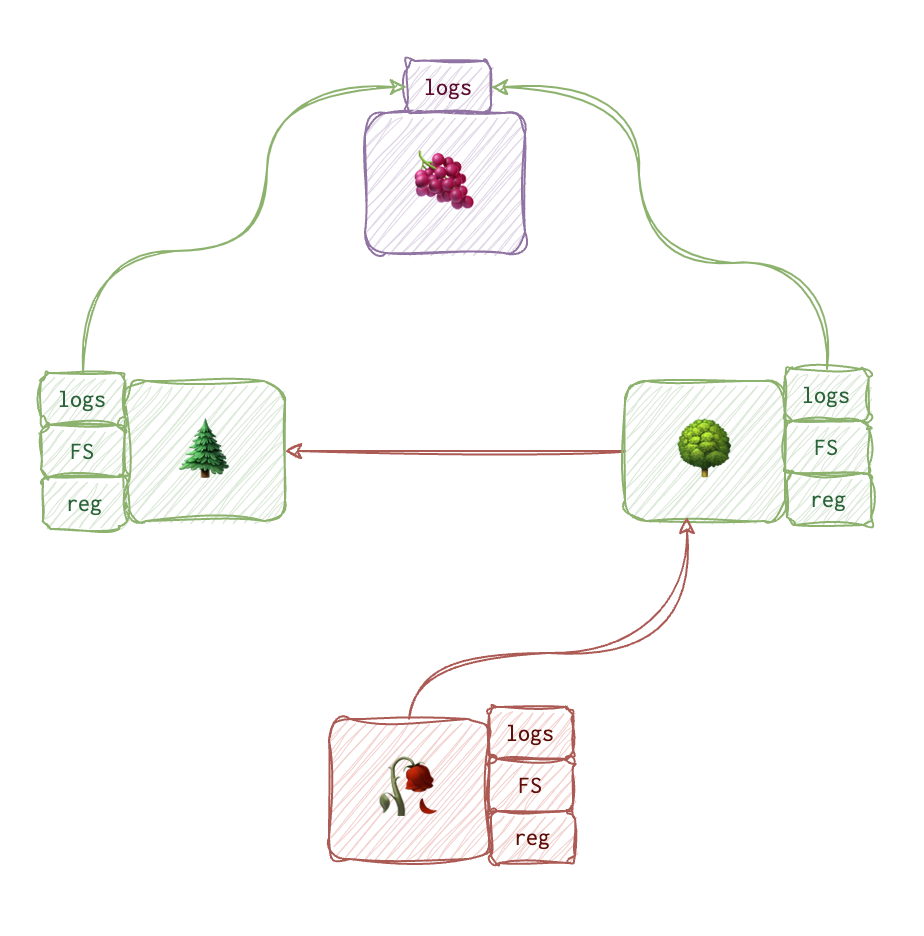

How to check if the system was accessed remotely? What sort of remote connections is the attacker likely to be using?
When we give a system the old remote-access razzle-dazzle system, a wealth of juicy artefacts stand ready for exploration: logs stored locally and telling the story of the past deeds, file system events tucked away by the system with the care of a fussy librarian and the config guardian (for Windows, it’s mostly the registry) pulling the strings behind the scenes.
 Depending on the attack stage (reconnaissance or discovery and lateral movements), we might have access to the DESTINATION machine. On that contraption, we’ll find ourselves amidst the same breed of artefacts. Depending on the activity, we might find a veritable feast or a mere smattering of evidence on the source or destination machines. And as a cherry on top, our workstations can siphon the logs into one neatly organised jar 🫙 (the SIEM).
Sneaky attackers go through reconnaissance and initial access stages twice (poor things): when bombarding the infrastructure from the outside world and while poking the systems in an already infiltrated kingdom.
Windows
RDP
Event Logs
- On source machine:
Security🛡️ (4648)TerminalServices-RDPClient🌸 (1024and1102)
- On the target machine:
Security🛡️ (4624, logon type10,4778and4779), seeSession nameto confirm it’s an RDP.Remote Desktop Services-RDPCoreTs🍇 (131,98)TerminalServices-RemoteConnectionManager🍎 (1149)TerminalServices-LocalSessionManager🍏(21,22,25,41)
Some breakdown of the above-mentioned codes (even if already explained elsewhere). You might filter for 4624 event id with logon type 10 to see the RDP connections. However, bear in mind that this event only records the NEW connections, not RE-connects. 4624 type 7 is triggered when lock/unlock activity happens. You will see 4778 for reconnects and 4779 for disconnects. Client name in 4778 shows the original machine name of the actor, giving some clues about the attacker.
❗️Logon IDs for
4624and4778might differ even though they represent the same session. This happens because the earlier created logon ID is often used instead. Search for4624events preceded by4647to find the logon4624event with the same ID.❗️ Username in
4624might NOT be the name of the original machine if some VPN or proxy is handling the connection.❗️ You might also see logon type 3 (4624). It’s not commonly used instead of type 10 if NLA is on and authenticating the client before establishing the RDP session.
Several event log trails can give some insight into RDP connection: 🛡️Security, Remote Desktop Services-RDPCoreTs 🍇, TerminalServices-LocalSessionManager 🍏, TerminalServices-RemoteConnectionManager 🍎 TerminalServices-RDPClient 🌸:
| 🤦🏽♂️ Actor | source ip and username (🍇 131, 98🛡️4648, 4624, 4778, 4779, 🍎 1149🍏21, 22, 25, 41)Hostname (🛡️) |
|---|---|
| 🎯 Target | Destination hostname 🌸 1024 and destination IP 🌸 1102 |
| 📝 Event Metadata | Successful Connections 🍇 98, Attempts 🍇 131 |
❗️
TerminalServices-RDPClient🌸 is a rare beast; it records the RDP activity on the SOURCE and is rarely turned on. All other logs record activity on the REMOTE system (thus, they are present on the remote system only).
✍🏻
4648- if NLA is enabled and alternate creds are used: username, alternate username, dest hostname, dest IP, process name✍🏻
1149- Blank username may indicate the use of Sticky keys.
Registry
🔑 NTUSER\Software\Microsoft\TerminalServiceClient\Servers shows recent RDP.
🛠️ RegRipper’s rdphint plugin can extract this information from the hive automatically.
JumpList
📂 C:\User\username\AppData\Roaming\Microsoft\Windows\Recent\AutomaticDestinations with {MSTSC_APPID}-automaticDestinations-ms show target info and a timestamp.
Prefetch, ShimCache, AmCache, BAM/DAM
📂 C:\Windows\Prefetch ([name]-[hash].pf
📄 C:\Windows\AppCompat\Programs\Amcache.hve (first time executed) and the following registry keys 🔑 at C:\Windows\System32\config\SYSTEM hive:
- 🔑
ControlSet001\Services\BAMand 🔑ControlSet001\Services\DAM(last time executed) - 🔑
CurrentControlSet\Control\Session Manager\AppCompatCache\AppCompatCache(Vista+) andCurrentControlSet\Control\Session Manager\AppCompatibility\AppCompatCache(XP-)
Find entries for the following executables:
- 📄
mstsc.exe - 📄
rdpclip.exe - 📄
tstheme.exe
BitmapCache
📂 C:\Users\username\AppData\Local\Microsoft\TerminalServerClient\Cache contains bcache##.bmc and cache#####.bin files worth examining. During an RDP connection, Windows collects parts of the image (those that change the least often) to save bandwidth. Sometimes you might see valuable information there, even VPN passwords.
Some file Default.rdf in the user profile; what is that?
Network Shares
👑 - admin (domain or RID500) rights are required to access those shares.
📕 RTFM: net use g: \\host\c$ /user:domain\uname [password] will be likely used by the attacker to mount the share. The command tells roughly the following: “Mount \\host\c$ share from the remote machine (which is the projection of C folder on that machine) as a G drive on the current machine. To succeed with this tiresome task, use username and passwords I EXPLICITLY provide”.
❓Since the credentials are provided explicitly, we will likely see Security EID
4648.
🪵 Even log trails:🛡️ Security and 🍍 Microsoft-Windows-SmbClient%Security.
It’s pretty noisy, so be smart. Also, to enable this logging, go to Object Access -> Audit File Share.
❗️No 👴🏼 XP logs.
5140 - network share was accessed.
5142 - 5144 - share created, modified, deleted.
5145 - the shared object was accessed.
If you see some 4624 followed by multiple 5140 events, it’s probably an attempt to mount the share. The attackers will be most interested in the ADMIN$ share. However, to use it, one needs to mount IPC$ share first. That’s good since it lets us see the account name, SID, and information not recorded for the ADMIN$ share mount event.
| Source | Destination |
|---|---|
🛡️4648 (alternate credentials): d_IP, d_host, p_name, c_user |
🛡️4624 type 3 (network logon), 5140 (share access), 4672 (elevated privileges, uname), 4776 (Kerberos auth validation, s_host and name), 4768, 4769, 5145 - share audit log. |
🍍31001 (failed logon to dest): d_host, uname, err_code |
🕸️ Network Forensics (if SMB connection was not encrypted) |
🗄️ Registry: MountPoints2 |
|
💼 ShellBags: USRClASS.DAT (remote folders accessed) |
|
⚙️ ShimCache, BAM/DAM, AmCache (look for net.exe and net1.exe) |
|
| 📑 Prefetch and User Profile Artefacts (shortcuts and jumplists) |
📑 File Created and Modified:
- Suspicious files copied to the share.
- Modification timestamp < creation timestamp -> If you copy a file to a different location, the new copy of the file may have a new creation time (when the copy was made) but still retain the original file’s earlier modification time.
- Created time is the time of the file copy.
PsExec
This application doesn’t exist on the system by default. It requires one to engage in a veritable dance of dexterity to get this precious executable on the system of interest. But this Herculean labour doesn’t go in vain: it also brings a mighty toolkit to further spread the damage.
📕 psexec.exe \\host -accepteula -d -c C:\some\path\iamnotnefarious.exe
🛡️Security logs, ⚙️ System Logs
| Artefact | 🚰 Source (psexec.exe) | 🎯 Target (psexesvc.exe), ❗️One can rename the executable with -r switch. |
|---|---|---|
| 🪵 Event logs | 🛡️ 4648 |
🛡️4624 type 3 (if no -u switch), 4624 type 2 (-u switch), 4672, 5140, ⚙️ 7045 (service installed). |
| 🗄️ Registry | ShimCache, BAM/DAM, AmCache | 🔑 SYSTEM\CurrentControlSet\Services\PSEXESVC (can get deleted on session closed) 🔑 NTUSER.DAT (when user profile is created, no -e switch)ShimCache and AmCache. |
| 📑 File system | Prefetch | Prefetch, user profile |
| 💭 RAM | With 4624 type 2 the token remains in the RAMProcess handles \\IP\name - shost - PID -stdin/stdout/stderr |
❗️Keep in mind that this executable consists of two parts:
psexec.exerunning on the source (cpehaps meansclient) whilepsexesvc.exeruns on the target system.❗️Also,
psexesvc.execreates a service each time it’s executing and deletes that service afterwards.
Event Logs
EID 4648 is of the most use here since it tracks the use of alternate credentials. It means that most of the time, the attacker needs to provide the credentials explicitly. Once this is done, this EID 4648 fires up and tells a tale of who (the current user), what (process id) and to whom (alternate credentials, destination IP and destination hostname) without even those thirty pieces of silver.
Registry
The three piglet of the registry that give away the program execution are ShimCache, the two bafoons BAM/DAM (last time executed) and AmCache (first time executed).
Prefetch
Of course, we would be lost without this little vigilant scoundrel. Ratting out almost any executable careless enough to be working under its unblinking gaze.
Other Apps
Custom apps for remote desktop connection produce their own artefacts as well. For example, VNC and TeamViewer. Not many of them are allowed in the enterprise, but these two buddies might be.
VNC
When VNC is used for remote connection, 4624 logon type 2 (Console login) is used instead. Also, VNC keeps its own wealth of logs - worth researching, to be honest (🗒️).
TeamViewer
This app is pretty 😎 cool because it keeps logs on BOTH source (TeamViewerX-Logfile.log) and the target (Conncections-incoming.txt) systems, which is of great use for the analysts. For these files look in 📂 C:\ProgramFiles\TeamViewer\VersionX folder.
References
Expand…
- ShimCache and AmCache enterprise-wide hunting - SANS Threat Hunting Summit 2017 https://www.youtube.com/watch?v=-0bYcD3_bBs